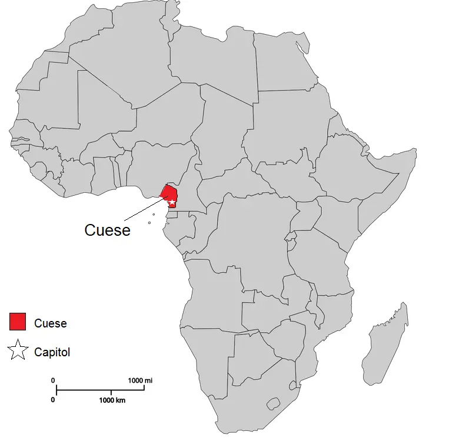
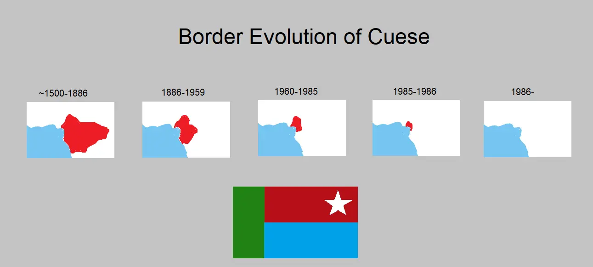

7th of April, 2026 | Courtesy of GFT Media Fnd. (homepage) and co-authors The History of Cuese --------------------------- Cuese was a country in West-Central Africa under French and Spanish territories during the Scramble for Africa in the late 19th century, located in present-day northwestern Cameroon and parts of Nigeria(?). It shared borders with Nigeria to the north and Cameroon to the east and had heavy French and Iberian influence due to colonisation. It gained independence in 1960 before falling in circa 1985 due to political instability, economic challenges and various socioeconomic factors. The origin of the name Cuese is difficult to track down, it is believed to derive from their belief of river spirits called "Kusás", which during colonisation is presumed to have shifted to the simplified Cuese.
History and Culture We were able to trace the roots of Cuese to around the 16th century, where a group of individiuals located near the area of the present-day Douala were seeking agricultural opportunities and engaging in various trade. The spots were strategic for multiple geographical reasons, eventually leading to formed settlements. Their capital, Cueso, is present-day Douala. [NOTE: Examine and reassess based on artifacts, known information. Some information here may be incorrect.] Illustrative Works and Notes - This article is unfinished and undergoing change, as it is a complicated and "lost" topic of history.
^ Highly speculative artwork of the Cuese flag and its borders over-time.